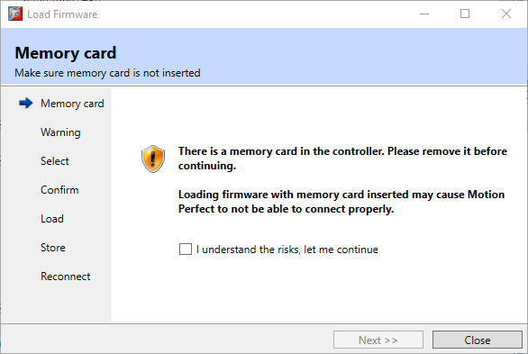
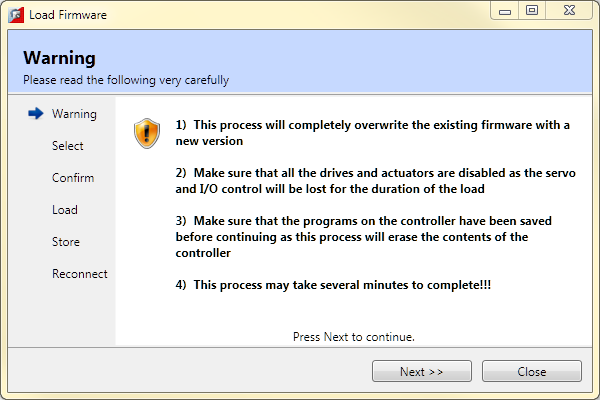
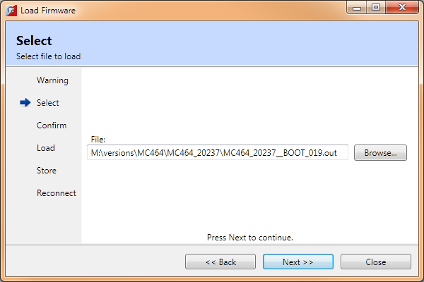
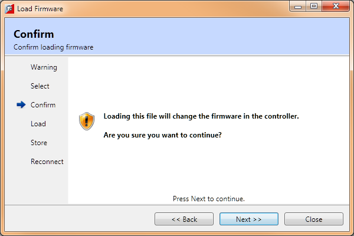
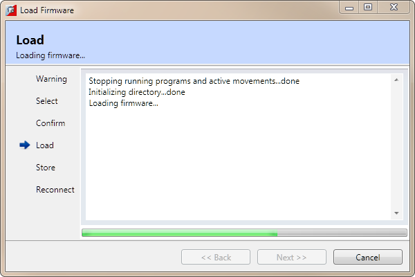
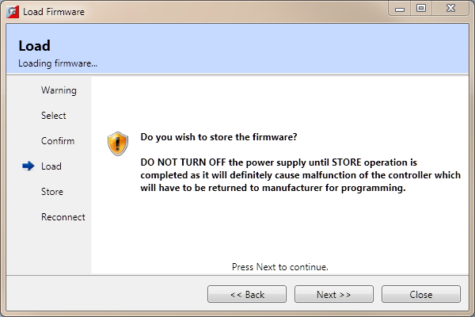
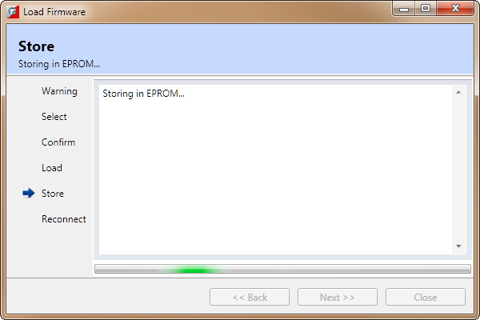
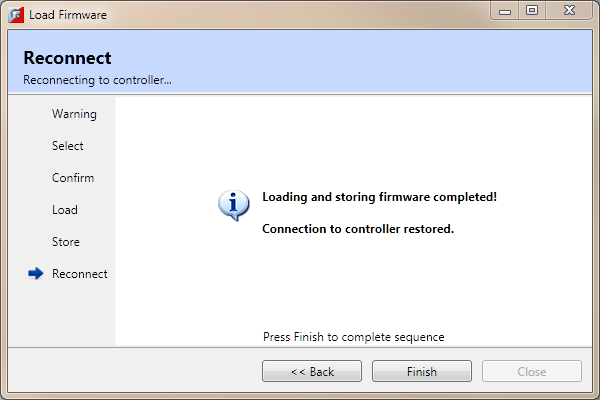

Motion Coordinators feature a flash EPROM for storage of both user programs and the system firmware. Using Motion Perfect it is possible to upgrade the system firmware to a newer version using a system file supplied by Trio.
We do not advise that you load a new version of the system firmware unless you are specifically advised to do so by your distributor or by Trio.
The process of loading new system firmware will erase all programs stored on the controller. So make sure that they are backed up (in a project on the PC) before starting.
When you select the "Load Firmware" option from the controller menu, you will be presented with a wizard type interface showing a warning page.
If you have a memory card in the controller the first warning page will suggest that you remove it as unless you are doing it for a specific reason, the settings stored on the memory card may cause problems after the firmware has been upgraded and could prevent Motion Perfect from reconnecting to the controller.

You will then be shown a warning page regarding disabling devices connected to the controller and advising that you should make sure that your project has been saved as the upgrade process will erase all programs from the controller.

When you click on "Next" you will be presented with a select page.

This will automatically start up a standard Windows file selector to choose the file you wish to load.
Each Motion Coordinator controller has its own system file, identified by the first characters of the file name.
|
System Code File Name |
File Type |
Controller Type |
|
MC403*.OUT |
COFF |
MC403 |
|
MC405*.OUT |
COFF |
MC405 |
|
MC464*.OUT |
COFF |
MC464 |
You must ensure that you load only software designed for your specific controller, other versions will not work and will probably make the controller unusable.
When the file dialog is closed the wizard remains on the select page. Pressing "Next" will display a confirmation page.

Pressing "Next" will display the Load page while the firmware is loading.

Downloading may take several minutes, depending on the speed of your PC, the controller and the communications link being used. During the download, you should see the names of each section displayed in the Output Window as they are loaded.
When the download is complete, a checksum check is performed to ensure that the download process was successful. If it passes the check you will be presented with a confirmation screen and asked if you wish to store the firmware into EPROM.

Clicking on "Next" will start the STORE process and display a Store page.

When the STORE operation has completed a Reconnect page will be displayed while Motion Perfect reconnects to the controller. When the reconnection process has completed press "Finish" to close the wizard.

It is advisable to check the controller configuration to confirm the new firmware version.